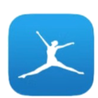
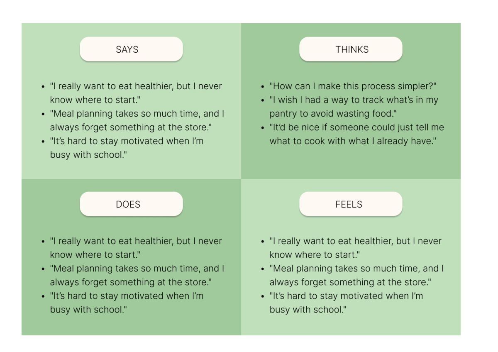
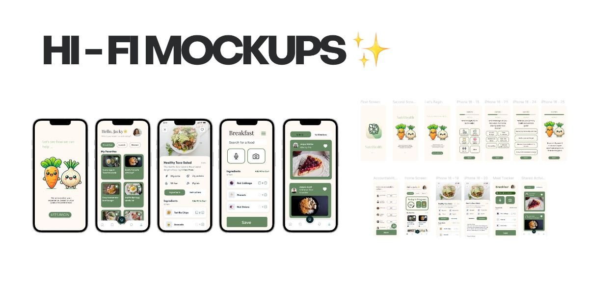

NutriHealth
A nutrition app that helps college students build better eating habits through simple food logging, recipe organization, and supportive, approachable UX design.
A nutrition app for college students
Maintaining a healthy diet as a college student often feels overwhelming with a busy schedule. Many of my friends and I relied on fast food, skipped meals, or felt unmotivated to make healthier choices.
College students struggle to maintain healthy eating habits
Maintaining a healthy diet as a college student often feels overwhelming with a busy schedule. Many of my friends and I relied on fast food, skipped meals, or felt unmotivated to make healthier choices.

How can we simplify meal planning, encourage better eating habits, and create a community around food amongst busy college students?
Existing apps fell short on affordability, time, and connection
After doing some preliminary white paper research, drawing from journals, articles and websites on some of the best ways to achieve a healthy and balanced diet with regards to college students in particular, I found an eye opening statistic.
Nearly 25% of college students experience food insecurity, leading to skipped meals and insufficient nutrition, which can adversely affect academic performance and overall well-being.
According to a study by the Dominican University of California, “individuals who write down their goals and share progress updates with a supportive network have a 65% higher success rate in achieving their goals”.
I conducted a survey with 50 college students and reviewed existing food apps, such as MyFitnessPal, Yummly, and Mealime. While these apps provided valuable tools, they often fell short in areas critical to college students, such as affordability, time-efficiency, and social connection.

MyFitnessPalI interviewed 16 of my peers
I conducted interviews and surveys amongst students who struggled with maintaining healthy eating habits. These users expressed frustration with meal planning, grocery shopping, and finding the motivation to cook regularly.
Students need tools that make healthy eating feel simple, fast, and approachable.


Three themes, and the design challenge each one set
Users often underestimate how much they eat out or rely on convenience foods.
Providing easy tools to log meals and visualize dietary trends to increase mindfulness.
Users struggle to find recipes that fit their budget, available ingredients, and time constraints.
Offering budget-friendly recipes and ingredient swaps to simplify healthy cooking.
Meal planning and grocery shopping are often done sporadically, leading to missed meals or unhealthy choices.
Designing features that encourage routine, such as weekly meal plans and reminders.
Three features that turn intention into routine
Build Personalized Meal Planner
Generates meal plans tailored to dietary preferences and goals.
Saves favourite recipes for quick access and inspiration.
Offers AI-powered suggestions based on available ingredients.
Have Accountability Partners
Increases chances of accomplishment up to 95%
Provides a source of intrinsic motivation
Avoid social consequences of not completing you goal
Log Daily Eating Habbits
Tracks meals and snacks to provide a clear overview of daily nutrition.
Identifies patterns to help users make healthier food choices.
Encourages consistency with reminders and motivational prompts.
Poppins, a soft green palette, and two vegetable companions

From paper sketches to a full screen library


Adding “Today's Progress” created a clearer path from intention to action

Key takeaways
I learned the importance of designing for real constraints, like limited time, motivation, and decision fatigue
Translated user research into insights that helped shape my design direction and decisions
I improved my ability to simplify complex systems into clear, intuitive interfaces
I learned that small design decisions can significantly influence habit formation and consistency